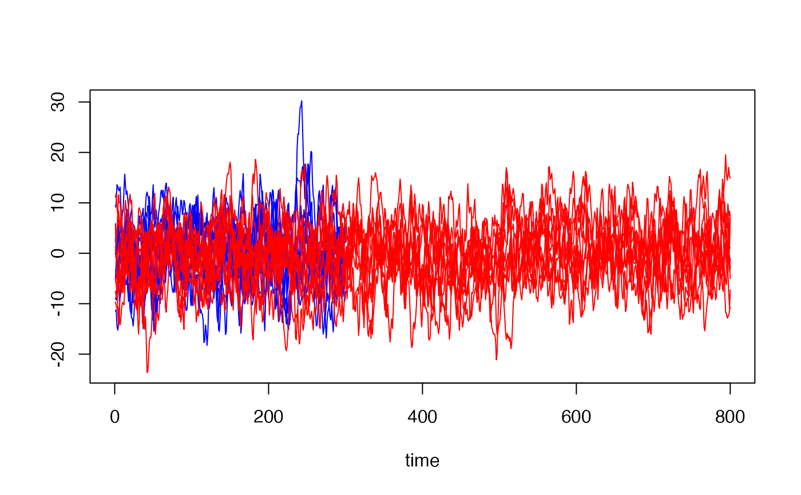

Generate R-many conditionally independent varying AR(2) time series with angle representation
generate_AR2_mixture.Rdgenerate_AR2_mixture() generates R-many slightly varying AR(2) time series given an R long vector of peak locations and and R long vector of bandwidths.
Arguments
- peaks
A vector of length
Rwith peak locations of each spectrum.- bandwidths
A vector of length
nwith the bandwidths of each spectrum.- n
A numeric vector that determines the length of the time series generated. Must contain
R-many entries. Time series may be of different lengths.- variances
An optional vector (default is
NULL) of lengthnwith the variances of the innovations.
Value
A list object that contains the following fields:
ts_list | returns an R-long list each containing an (n[r] \(\times\) 1) matrix of the generated time series. |
phi1_true | returns a (1 \(\times\) R) numeric matrix that contains the first AR(2) coefficients generated for each time series. |
phi2_true | returns a (1 \(\times\) R) numeric matrix that contains the second AR(2) coefficients generated for each time series. |
Examples
R = 20
n = c(rep(300, R/2), rep(800, R/2))
## Generate peaks and bandwidths:
peaks1 = stats::runif(R,
min = 0.2,
max = 0.23)
bandwidths1 = stats::runif(R,
min = .1,
max = .2)
peaks2 = stats::runif(R,
min = (pi * (2/5)) - 0.1,
max = (pi * (2/5)) + 0.1)
bandwidths2 = rep(0.15,
R)
peaks = rbind(peaks1, peaks2)
bandwidths = rbind(bandwidths1, bandwidths2)
## Call the function to generate time series
ts = generate_AR2_mixture(peaks = peaks,
bandwidths = bandwidths,
n = n)$ts_list
## `$ts_list` returns an R-long list object each with a (n_vary[r] x 1) matrix object,
## `$phi1_true` returns a (1 x 20) matrix of the first AR(2)
## coefficients, and `$phi2_true` returns a
## (1 x 20) matrix object of the second AR(2) coefficients.
## Plot
## Create an empty plot
plot(
x = c(),
y = c(),
xlim = c(0, 800),
ylim = range(ts),
ylab = "",
xlab = "time"
)
for (r in 1:10) {
lines(ts[[r]][, 1], col = "blue")
}
for (r in 11:R) {
lines(ts[[r]][, 1], col = "red")
}
